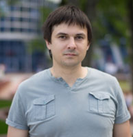

Resume
Sergey Zaretsky
Mobile: +375-29-613-10-46 Email: z__s@mail.ru
I’m a web developer from 2005, working with PHP. In order to get more actual knowledges have applied to RSSchool JavaScript course, because for me it’s more efficient to learn something with lectures, exercises and specified deadlines.
My skills
PHP, MySQL, JavaScript, CSS, HTML. Mainly, PHP + MySQL. Yii framework. HTML/CSS/JavaScript, Ajax, JQuery, Sphinx, memcached. Java, Spring, iOS, SVN.
Code examples
Experience
Nowadays I’m working in a small SEO company. For its purposes I’m
writing a lot of work-organizing admin panels, server-side scripts.
Tools and Technologies: PHP, MySQL, Yii.
Primary Responsibilities: project architecture,
database architecture, core development, optimization, technical
consulting
Key Contributions: core development of the system
Education
-
Higher education Belarusian State University, Mechanics and Mathematics faculty. (1998-2003)
-
Web-development training courses European Humanities University, Minsk, Belarus School of Business and Management of Technology, Minsk, Belarus (2004-2005)
-
Language courses English (2005-2008) Czech (2009)
-
Belhard courses Java EE (2012) Programming for iOS (2015)
-
Java internship Java EE, Spring (2019)
English
Quiz results — English Level Test: A2+